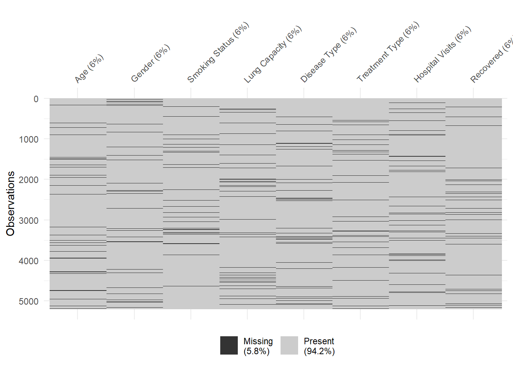
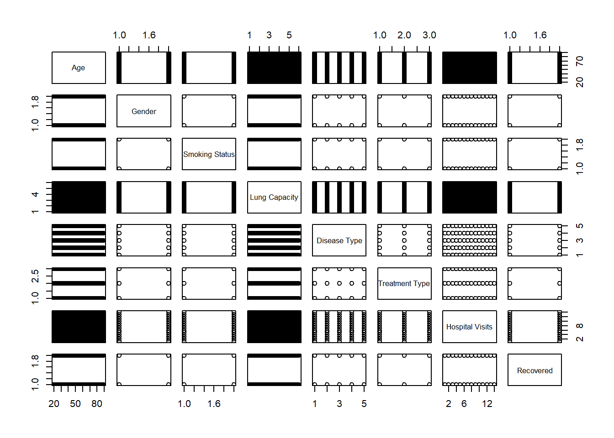
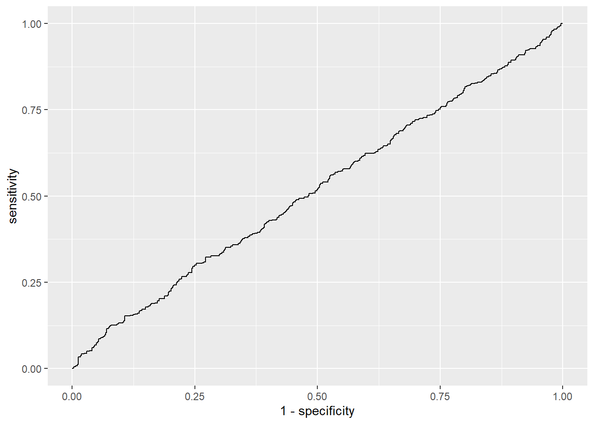

library(here)
library(readr)
library(dplyr)
library(ggplot2)
library(rsample)
library(naniar)
library(mice)
library(parsnip)
library(yardstick)An Exploration of Medical Data
Motivation and Context
My original motivation for choosing this dataset was a personal interest in medicine. Additionally, I am likely to be working with health data in the future, as I have the goal of working in the insurance industry. This dataset contains information on patients with a number of different lung diseases: Asthma, Bronchitis, COPD, Lung Cancer, and Pneumonia.
Main Objective
The main objective of this analysis is to predict the likelihood of recovery for a patient suffering from one of the listed lung conditions, given known factors such as age, smoking status, and lung capacity.
Packages Used In This Analysis
| Package | Use |
|---|---|
| here | to easily load and save data |
| readr | to import the CSV file data |
| dplyr | to massage and summarize data |
| rsample | to split data into training and test sets |
| ggplot2 | to create nice-looking and informative graphs |
| naniar | to summarize and visualize missing data |
| mice | to impute missing values |
| parsnip | to create the model with the data |
| yardstick | to measure the model’s performance |
Data Description
This data was found on Kaggle, and was reportedly obtained via web scraping off of the websites of three lung clinics in the Indiana area.
lung_disease <- readr::read_csv(here::here("lung_disease_data.csv"))Data Limitations
There are many limitations as to the effectiveness of this data in modeling a general population. The data itself was collected through questionable methods with little documentation, and was possibly even synthesized. Other factors, such as the unusual distribution of patient ages and the uniformity of the recovery rates across different diseases, which will be explored shortly, provide further support for the possibility.
Data Wrangling
This dataset requires separation of the training and test sets, and accounting for the missing values. The latter will be done after the EDA, to determine whether they should be imputed or omitted, and how, while the former must be done after the missing values are accounted for. For now, the categorical variables will be made into factors for ease of processing.
lung_disease$Gender <- as.factor(lung_disease$Gender)
lung_disease$`Smoking Status`<- as.factor(lung_disease$`Smoking Status`)
lung_disease$Recovered <- as.factor(lung_disease$Recovered)
lung_disease$`Disease Type`<- as.factor(lung_disease$`Disease Type`)
lung_disease$`Treatment Type` <- as.factor(lung_disease$`Treatment Type`)Exploratory Data Analysis
We will first look at the missing parts of the data, to determine if there are any visible patterns or correlations in the missing data points that will be informative. A simple plot shows that the data seems to be missing at random, with little correlation between variables. Utilizing a test for randomness reveals the same. Such a uniform distribution of missing values is highly inconsistent with real-life data collection, and another point in favor of this data being synthetic, or at least highly flawed in its collection. However, the fact that the data is missing completely at random means that data can be imputed without fear of greatly affecting the resulting model.
mcar_test(lung_disease)# A tibble: 1 × 4
statistic df p.value missing.patterns
<dbl> <dbl> <dbl> <int>
1 370. 391 0.770 71vis_miss(lung_disease)
There are a few other inconsistencies in this dataset, which can be seen when examining the data more closely. A look at the recovery rates for each disease shows the following:
lung_disease %>%
select(Recovered,`Disease Type`) %>%
na.omit() %>%
count(Recovered, `Disease Type`) %>%
group_by(`Disease Type`) %>%
mutate(percent_recovered = prop.table(n) * 100) %>%
filter(Recovered == "Yes")# A tibble: 5 × 4
# Groups: Disease Type [5]
Recovered `Disease Type` n percent_recovered
<fct> <fct> <int> <dbl>
1 Yes Asthma 485 51.6
2 Yes Bronchitis 456 47.7
3 Yes COPD 509 53.8
4 Yes Lung Cancer 461 52.5
5 Yes Pneumonia 432 48.2We can see that the proportion of patients who successfully recovered is approximately 50% for each disease. This is, of course, inconsistent with the real-life rates of recovery for these diseases.
Despite the data being inconsistent with reality, it is the data we have, so we will model with it, as a demonstration of the modeling techniques. Before we do so, we will look for any correlation between the variables.
pairs(lung_disease)
The scatter plots here do not show any obvious relationships between two variables, with any patterns simply being from the limited number of values for the categorical variables. We would expect some level of correlation between some variables, such as smoking being associated with lung cancer and COPD. the fcat that this is not the case is yet another limitation for our data.
Data Wrangling (Continued)
With the EDA complete, the imputation as well as the creation of the training and test sets can be done.
# | echo: false
set.seed(1337)
lung_impute <- mice(lung_disease, m = 1)
iter imp variable
1 1 Age Gender Smoking Status Lung Capacity Disease Type Treatment Type Hospital Visits Recovered
2 1 Age Gender Smoking Status Lung Capacity Disease Type Treatment Type Hospital Visits Recovered
3 1 Age Gender Smoking Status Lung Capacity Disease Type Treatment Type Hospital Visits Recovered
4 1 Age Gender Smoking Status Lung Capacity Disease Type Treatment Type Hospital Visits Recovered
5 1 Age Gender Smoking Status Lung Capacity Disease Type Treatment Type Hospital Visits Recoveredlung_final <- complete(lung_impute,1)
lung_split<- initial_split(lung_final,prop = 0.8)
lung_train <- training(lung_split)
lung_test <- testing(lung_split)Modeling
For this model, we will use multiple logistic regression, since that is the simplest model that fits our needs. The data is suited for it, with all the predictors being mostly independent.
lung_model <- logistic_reg(mode = "classification", engine = "glm")
lung_fit <- fit(lung_model, Recovered ~ Age + Gender + `Smoking Status` + `Lung Capacity` + `Disease Type` + `Treatment Type` + `Hospital Visits`, data = lung_train)In order to measure the effectiveness of our model, we will use the AUROC, or the area under the receiver operating characteristic curve. It is a robust measure that is well-suited to binary classification models such as ours.
lung_predictions <- predict.glm(lung_fit$fit, newdata = lung_test, type = "response")lung_pred <- data.frame(lung_predictions, lung_test$Recovered)
roc_auc(lung_pred,lung_test.Recovered,lung_predictions)# A tibble: 1 × 3
.metric .estimator .estimate
<chr> <chr> <dbl>
1 roc_auc binary 0.518The measure of 0.517 indicates that our model is not very effective at predicting the the likelihood of recovery, being only slightly better than random chance. This is possibly due to the choice in model, but it is more likely to be caused by the dataset, as there is very little correlation between the variables, even the response and the predictors.
Insights
In the process of analyzing and modeling this dataset, we have found that in the case of this set of data, factors such as age, smoking status, and lung capacity are poor predictors of the likelihood of recovery for a lung disease patient.
coef(summary(lung_fit$fit)) Estimate Std. Error z value Pr(>|z|)
(Intercept) 0.0595922573 0.157171354 0.3791547 0.70457299
Age 0.0008538912 0.001539796 0.5545484 0.57920361
GenderMale -0.0644952231 0.062321492 -1.0348793 0.30072527
`Smoking Status`Yes -0.0379053467 0.062376578 -0.6076856 0.54339603
`Lung Capacity` 0.0045654651 0.021345190 0.2138873 0.83063494
`Disease Type`Bronchitis -0.1803862568 0.097929800 -1.8419956 0.06547580
`Disease Type`COPD 0.1521118934 0.097279988 1.5636504 0.11789969
`Disease Type`Lung Cancer 0.2030574741 0.099689271 2.0369040 0.04165966
`Disease Type`Pneumonia -0.0610242874 0.099226557 -0.6149995 0.53855502
`Treatment Type`Surgery -0.0521917571 0.076432014 -0.6828520 0.49470034
`Treatment Type`Therapy 0.1275435157 0.075900822 1.6803970 0.09288010
`Hospital Visits` -0.0098744535 0.007723485 -1.2784972 0.20107418As we can see from this table of coefficients, the p-values of each coefficient, even uncorrected, are very low, which tells us that it is very uncertain whether the predictor variables have any influence on the response at all.
roc_curve(lung_pred,lung_test.Recovered,lung_predictions) %>%
ggplot(aes(x = 1 - specificity, y = sensitivity)) +
geom_path()
Limitations and Future Work
This analysis, while a functional demonstration of data analysis and modeling techniques, has not produced any results that are applicable to other real world applications. Even in the context of its own dataset, the model is a poor predictor, being only marginally better than random chance. The dataset itself was poorly documented in its collection, if it was even collected as all. The performance of this model is evidence that any model can only be as effective as the data used to train it, and this data was completely ineffective.